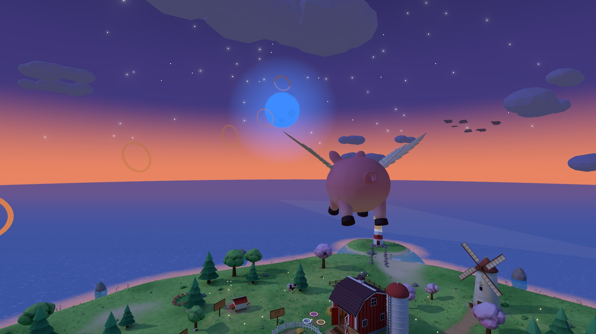

A needle in a haystack
Six haystacks. One needle. Root through them with your face. It will be in the last one you check, because it always is.
A browser game about very long odds
You are a pig. Do five impossible things, grow a pair of wings, and get over the moon.
Every idiom on the island is a job, and each game asks for a different five. The afternoon wears on as you go, a lighthouse comes on at dusk, the island keeps fifteen secrets, and everything answers back if you oink at it. Finish one and the odds drop, the meter climbs, and your wings get a size bigger.
Six haystacks. One needle. Root through them with your face. It will be in the last one you check, because it always is.
One would be lucky. Four is a statistical incident. They are hiding at the far edges of the island.
Climb the hill. Stand by the rod. Get struck. Then stay exactly where you are, since it never happens twice.
There is a snowball. There is a pit of lava with a population of zero. Give the snowball its chance.
Two cows, both out. Nobody is going to wait for them, so herd them into the pen yourself.
There is a stone. It contains no blood. Take a run at it anyway, and then another.
Rare, they say. Three hens, one coop, and exactly one full set of teeth. Catch them and check.
He has seen it all and learned none of it. Hop, oink and spin until he does it too.
Three cats and one cushion. They will go anywhere except where you want. Want it harder.
It moves when you get there. Then it moves again. It cannot keep that up for ever.
It never boils. Stand still, stare at it, and do not look away. See who cracks first.
One crate, one hole, two shapes. Push until geometry gives up.
Do your five and the moon turns blue. Take off, follow the rings, and go over the top of it. The barn is locked, by the way. Ask the horse.
A hop. Two decorative nubs. Gravity is winning.
Two flaps in mid-air and a glide. Trees become optional.
Four flaps. You can clear the barn. The cows have questions.
Hold the button and fly. All of it. Up to the moon.

“Udderly implausible.”
A cow, on her way home
“I hit that pig twice. I'd do it again, which I'm told I can't.”
The lightning
“Cold.”
Hell
“Finally, some recognition.”
The needle
Reviews are from residents of the island and are made up, like the island.
Takes about five minutes. Runs on a laptop or a phone. Sound is recommended; oinking is optional.